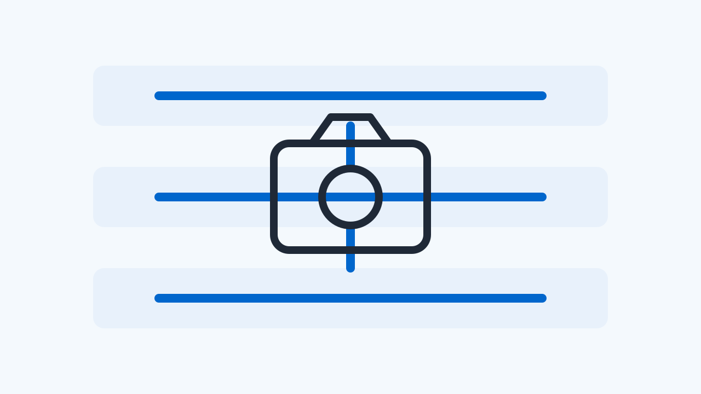

Camera SWNewsletter - 2026-09-28
이번 주 뉴스레터에서는 Renesas RZ/V2H EVK 보드를 위한 Arm Mali-C55 ISP 및 IVC 하드웨어 가속 활성화 패치 제안과 Samsung S5K3T2 이미지 센서용 신규 드라이버 패치, 그리고 Intel IPU7 드라이버의 리소스 누수 방지 패치를 다룹니다. 또한 Android Studio의 개방형 AI 에이전트 통합 기능이 네이티브 개발 워크플로우에 미치는 영향을 분석합니다.
이번 주 3줄 브리핑
- Renesas RZ/V2H EVK 보드를 위한 Arm Mali-C55 ISP 및 IVC 하드웨어 가속 활성화 패치 시리즈가 제안되어 하위 이미지 파이프라인 검증의 기반을 마련했습니다.
- Samsung S5K3T2 20메가픽셀 이미지 센서의 리눅스 커널 드라이버 및 바인딩 추가 패치가 제출되어 신규 센서의 MIPI D-PHY 레인 구성과 초기화 시퀀스 검증이 요구됩니다.
- Intel IPU7 드라이버에서 장치 제거 시 ISYS 펌웨어 리소스를 올바르게 해제하는 패치가 제안되어 카메라 시스템의 장기 작동 안정성과 메모리 누수 방지에 기여합니다.
Android Studio에서 개발자 선택에 따른 다양한 AI 에이전트 통합 지원 발표
Android Developers Blog

개발 도구에 AI 에이전트를 통합하여 생산성을 극대화하는 흐름이 네이티브 개발 환경으로 빠르게 확장되고 있습니다.
최근 Android Studio에서 개발자가 원하는 다양한 AI 코딩 에이전트와 맞춤형 기업용 하네스, 자율 도구를 통합하여 사용할 수 있도록 지원하는 개방적이고 유연한 기능이 발표되었습니다. 이번 변경은 개발자가 자신에게 가장 적합한 AI 도구를 선택하여 Android 앱을 빌드할 수 있도록 돕는 데 중점을 두고 있습니다.
Android Developer Experience의 Product Manager인 Matthew Warner의 발표에 따르면, AI 기반 개발 도구는 엔지니어링 생산성을 높이는 필수적인 요소로 자리 잡았습니다. 이에 따라 Android Studio는 특정 도구에 국한되지 않고 개발 팀의 요구에 맞는 다양한 AI 에이전트를 활용할 수 있는 환경을 제공하게 되었습니다.
네이티브 개발 워크플로우에서의 활용
이 기능은 Android Camera HAL이나 드라이버의 런타임 동작을 직접 변경하는 것은 아닙니다. 하지만 네이티브 C++ 코드를 다루는 카메라 개발 팀의 빌드, 테스트, 디버깅 워크플로우에 간접적으로 기여할 수 있습니다. 예를 들어 복잡한 카메라 메타데이터 처리 로직이나 V4L2 제어 코드의 초안을 작성하고, 단위 테스트 스크립트를 생성하는 과정에서 AI 에이전트를 활용해 반복 작업의 시간을 단축할 수 있습니다.
다만 일반적인 AI 제품 뉴스를 카메라 HAL의 직접적인 데이터 경로 변경이나 런타임 계약 변화로 확대 해석해서는 안 됩니다. 이 기능은 순수하게 개발 도구의 유연성을 높이는 워크플로우 개선 신호로 다루어야 하며, 팀 내 도입 시 보안 정책 및 코드 유출 방지 가이드라인을 먼저 검토하는 편이 안전합니다.
직접적인 Camera HAL 런타임 영향은 없으나, 네이티브 C++ 카메라 모듈 개발 및 테스트 스크립트 작성 시 AI 에이전트를 활용하여 개발 생산성을 높일 수 있습니다. 특히 복잡한 HAL3 메타데이터 매핑 코드나 단위 테스트 보일러플레이트 코드를 생성할 때 유용하게 활용할 수 있습니다.
Renesas RZ/V2H EVK 보드를 위한 Arm Mali-C55 ISP 및 IVC 하드웨어 가속 활성화 패치 제안
lore.kernel.org linux-media list

새로운 SoC 플랫폼에서 카메라 하드웨어 가속을 활성화하는 작업은 하위 이미지 파이프라인의 성능과 전력 효율을 결정짓는 첫 단추입니다.
최근 Renesas RZ/V2H EVK 보드에 Arm Mali-C55 ISP 및 IVC 하드웨어 가속 노드를 추가하고 활성화하기 위한 리눅스 커널 장치 트리 패치 시리즈 v2가 제안되었습니다. 이번 변경은 하위 드라이버 수준에서 Mali-C55 ISP와, 메모리에 있는 프레임을 ISP로 넣어 주는 IVC(Input Video Control) 블록의 하드웨어 자원을 선언하고 비디오 엔드포인트를 연결하는 작업을 담고 있습니다.
패치 세부 내용에 따르면 이번 제안에는 선택적인 ISP DMA 라인 틱 인터럽트와 IVC 프레임 시작 및 종료 인터럽트에 대한 설명이 포함되어 있습니다. 하드웨어 가속 블록이 정상적으로 활성화되고 적절한 리눅스 드라이버가 로드되면 시스템 콘솔에서 Mali-C55 ISP 9000043.31032022.0 버전을 감지했다는 메시지를 확인할 수 있습니다.
하위 스택 활성화의 기술적 의미
이 패치 시리즈는 아직 리눅스 커널 메인라인에 머지되지 않은 제안 단계이지만 새로운 SoC 플랫폼에서 Android 카메라 HAL이 하드웨어 기능을 활용하기 위한 필수적인 하위 계층 변경입니다. 장치 트리 수준에서 ISP와 IVC 노드가 올바르게 정의되어야 상위 미디어 프레임워크와 카메라 서비스가 물리적 센서 데이터에 접근할 수 있습니다.
다만 이번 변경은 RZ/V2H EVK 보드에 초점을 맞추고 있으므로 다른 RZ/V2H 변형 플랫폼에 즉시 적용된다고 단정할 수는 없습니다. 또한 Android HAL이나 Camera2 API에 직접적인 변경을 가져오는 것은 아니며 리눅스 커널 드라이버 수준의 기반 작업이라는 점을 염두에 두어야 합니다.
직접적인 Android HAL 변경은 아니지만, 새로운 SoC 플랫폼에서 Arm Mali-C55 ISP 및 IVC 하드웨어 가속이 활성화됨에 따라 하위 이미지 파이프라인의 프레임 타이밍과 포맷 협상 동작을 검증해야 합니다. 특히 ISP DMA 라인 틱 인터럽트와 IVC 프레임 시작 및 종료 인터럽트가 정상적으로 동작하여 프레임 드롭이나 지연을 유발하지 않는지 드라이버 수준에서 모니터링해야 합니다.
Samsung S5K3T2 20메가픽셀 이미지 센서용 리눅스 커널 드라이버 패치 제안
lore.kernel.org linux-media list
새로운 이미지 센서를 모바일 플랫폼에 통합하려면 하위 드라이버 수준에서 하드웨어 특성을 정확히 정의하는 작업이 선행되어야 합니다.
최근 Samsung S5K3T2 20메가픽셀 CMOS 이미지 센서에 대한 디바이스 트리 바인딩 및 드라이버를 리눅스 커널에 추가하기 위한 패치 시리즈 v3이 제안되었습니다. 이 센서는 4개의 MIPI D-PHY 레인을 사용하여 고해상도 이미지 데이터를 전송하는 특성을 지니고 있습니다.
제안된 드라이버는 Xiaomi POCO F3 기기의 전면 카메라 하드웨어를 기반으로 작성되었으며 Qualcomm CAMSS 드라이버와 함께 정상적으로 동작하는지 검증을 거쳤습니다. 다만 해당 기기의 메인라인 디바이스 트리가 아직 존재하지 않아 이번 패치 시리즈에는 바인딩 사용자가 직접 포함되지 않았습니다.
이미지 센서 드라이버 추가의 의의
새로운 이미지 센서 드라이버가 커널 미디어 서브시스템에 추가되는 것은 Android 기기에서 해당 센서의 고유 기능을 활용하기 위한 첫 단계입니다. 드라이버 수준에서 센서 레지스터 설정, 클럭 제어, MIPI 레인 구성이 완료되어야 상위 Camera HAL이 센서 모드를 제어하고 최적의 화질을 확보할 수 있습니다.
이번 패치는 현재 v3 리비전으로 검토 중인 제안 단계이며 아직 메인라인 커널에 머지되지 않았습니다. 또한 특정 Qualcomm CAMSS 환경에서 테스트되었으므로 다른 SoC 플랫폼이나 미디어 컨트롤러 파이프라인에 통합할 때는 드라이버 호환성과 MIPI 타이밍 설정을 추가로 검증해야 합니다.
직접적인 Android HAL 변경은 아니지만, Samsung S5K3T2 센서를 탑재한 기기를 개발할 때 하위 V4L2 서브디바이스 드라이버의 초기화 시퀀스와 MIPI D-PHY 레인 설정을 검증해야 합니다. 특히 4레인 구성에서의 데이터 전송 안정성과 센서 노출/게인 레지스터 제어가 V4L2 컨트롤을 통해 Camera HAL에 올바르게 매핑되는지 확인해야 합니다.
Intel IPU7 드라이버의 장치 제거 시 ISYS 펌웨어 리소스 누수 방지 패치 제안
lore.kernel.org linux-media list (Intel IPU)
카메라 드라이버의 안정성은 단순히 프레임을 잘 캡처하는 것뿐만 아니라 장치의 수명 주기 동안 자원을 얼마나 완벽하게 관리하는지에도 달려 있습니다.
최근 Intel IPU7 이미지 처리 장치 드라이버에서 장치 제거 시 ISYS 펌웨어 리소스가 해제되지 않고 남아있던 누수 문제를 해결하기 위한 패치가 제안되었습니다. 기존 드라이버 구현에서는 프로브 단계에서 에러가 발생했을 때만 리소스 해제 헬퍼 함수를 호출하고 정상적인 장치 언로드 시에는 이를 누락하는 허점이 있었습니다.
이번 패치는 정상적인 장치 제거 경로인 isys_remove() 함수 내에 ipu7_fw_isys_release() 호출을 추가하여 초기화되었던 ISYS 펌웨어 리소스가 정상적으로 커널에 반환되도록 수정합니다. 이를 통해 장치 드라이버의 반복적인 로드 및 언로드 시 발생할 수 있는 메모리 누수와 리소스 고갈 위험을 방지합니다.
리소스 관리 개선과 시스템 안정성
카메라 드라이버 수준에서의 자원 누수 방지는 모바일 및 임베디드 시스템의 장기 작동 안정성에 매우 중요한 요소입니다. 특히 카메라 모듈의 전원 관리나 핫플러그 시나리오에서 드라이버가 반복적으로 초기화되고 해제될 때 누적되는 자원 손실은 시스템 다운타임으로 이어질 수 있습니다.
제안된 패치는 현재 검토 단계이며 아직 메인라인 커널에 머지되지 않았습니다. Intel IPU7 하드웨어를 사용하는 플랫폼 개발 팀은 해당 드라이버의 자원 해제 로직이 정상적으로 동작하는지 검증해야 하며, 장시간 카메라 작동 및 반복적인 장치 재초기화 테스트를 통해 메모리 누수 여부를 모니터링해야 합니다.
직접적인 Android HAL 변경은 아니지만, Intel IPU7 드라이버를 사용하는 플랫폼에서 카메라 서비스의 수명 주기 관리와 시스템 안정성을 확보하기 위해 필수적인 드라이버 패치입니다. 드라이버 언로드 및 재로드 시 ISYS 펌웨어 리소스가 완전히 해제되는지 확인하고, 카메라 서브시스템의 메모리 사용량 추이를 모니터링해야 합니다.